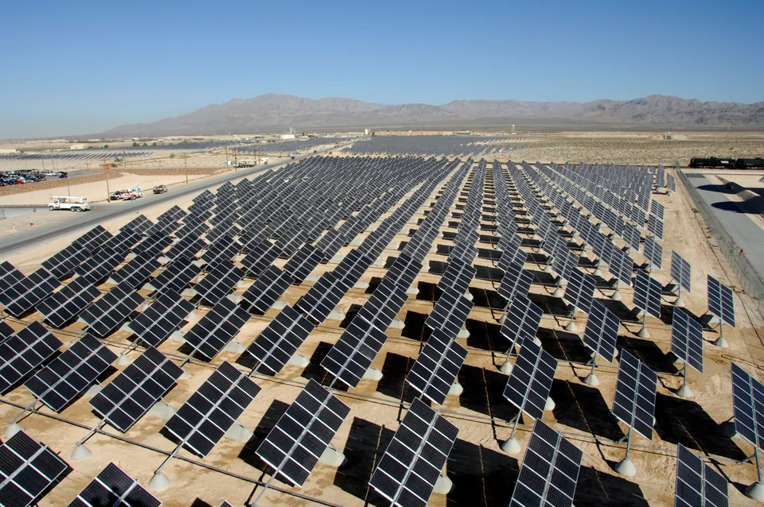

EV drivers
Pay for completed Charge sessions.
ENERGY · INFRASTRUCTURE · RESPONSIBILITY
Solar produces and stores energy. Charge turns it into a transport service. Compute turns it into managed GPU capacity. Three separate projects are connected by one operating foundation.
See how electrical work led to Charge, Solar and Compute
The projects share engineering, sites, monitoring and operating experience. Their revenue, costs, risks, agreements and client decisions remain separate.
HOW ONE DIRECTION LED TO THE NEXT
EcoGrid did not collect unrelated trends. Charge revealed the importance of power and utilization; Solar and storage address generation and timing; Compute applies that infrastructure experience to the growing demand for AI capacity.
The company began with the practical work behind safe power distribution, equipment and operating sites.
Charging showed how location, grid connection, demand, utilization and service shape an infrastructure business.
The next constraint was energy: where it comes from, what it costs and how storage can move its use through time.
AI infrastructure adds a new energy-intensive service: GPU capacity supported by power, cooling, network and professional operations.
Site engineering, power distribution, storage, monitoring, maintenance, procurement and operating teams can be planned together where the actual site allows it.
Grid capacity, electricity mix, demand, utilization, equipment, customer contracts, savings and project economics. A shared story is not proof that every site has every capability.
Choose the task that fits you. Each direction has its own purpose, economics, evidence, terms and request.
Transport demand
Charging locations turn electricity into a service for drivers. Charge keeps its own agreement, funding logic and operating evidence.
Explore ChargeGeneration and storage
Solar produces electricity; storage helps shift when it is used. Property systems and project participation have separate proposals.
Explore SolarAI infrastructure
GPU systems turn available power, cooling and network capacity into a computing service. Capacity and participation follow separate written terms.
Explore ComputeEcoGrid AI is our shared operating intelligence across every project. It compares generation, demand, tariffs and equipment condition to help allocate energy where it delivers more value and reduce avoidable costs. Operators set the limits and approve operating decisions.
Solar panels, battery storage and EV chargers. Equipment selection and installation.
EcoGrid grew from electrical and energy engineering. Charge was the first practical direction: interconnection, distributed-load, peak and energy-cost experience led to Solar and storage. Compute is the next step, adding GPUs, cooling, networking and data-center operations. Shared infrastructure may reduce some capital and operating costs, but revenue, expenses, risks, terms and agreements are calculated separately for each project.
EcoGrid AI is our shared operating intelligence across every project. It compares generation, demand, tariffs and equipment condition to help allocate energy where it delivers more value and reduce avoidable costs. Operators set the limits and approve operating decisions.
Pay for completed Charge sessions.
Buy equipment, design and installation or discuss separate participation in an energy project.
Pay for confirmed GPU capacity and an agreed service level; any participation result is calculated only under a separate project model.
What guides us
EcoGrid’s founder and CEO is a Protestant Christian. We say this openly so clients understand the convictions behind the company.
He states them directly: tell the truth, act lawfully and transparently, keep your word, help people in need, care for your family, and honor your parents. These principles guide company decisions and conduct.
EcoGrid funds charitable initiatives and Protestant church communities that serve people only from its own available company funds—not from client or project funds.
EcoGrid is open to people of every faith and those with none. Personal beliefs do not affect access, service, or project terms.
Compare Charge, Solar or Compute, then prepare questions about the model, documents and account.
Open EcoGrid Academy →The Club is a place for ideas, practical skills and connections with people who share your interests in responsible energy, technology, AI and the digital future.
Explore EcoGrid ClubSee active projects, account activity, documents and a direct line to your manager in one workspace.
Open your accountOpen a project when your goal is clear, choose the Club for community conversations, or use the Academy when you want a structured explanation first. Each path preserves your original interest.
Charge develops charging infrastructure, Solar covers generation, storage and property equipment, and Compute provides managed GPU capacity plus a separate path for reviewing a defined AI-infrastructure project. Each project has its own request and agreement.
Track active projects, account activity and available documents. You can also contact your manager and review project updates.
Open your accountThe document register identifies available sources and items still awaiting verification. Public station listings alone do not establish company ownership.
Open the document registerOrganizations in the EcoGrid partner ecosystem work in technology, finance, retail and electric mobility. Each has its own commitments and scope.